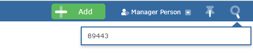
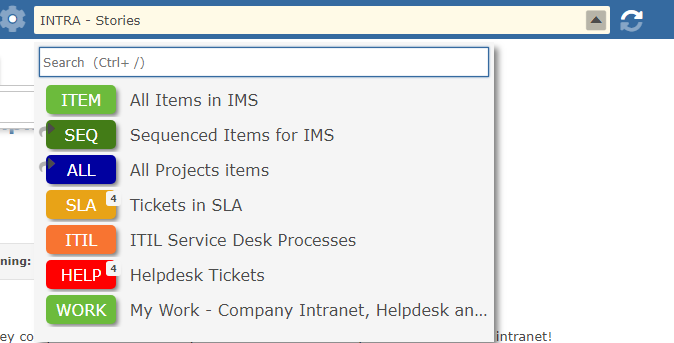

You can find any using the item ID. Just type it into the search window at the top right to be taken to the View Item page with the item loaded.

Note If you search for an item in this way you will no longer be in a Workspace, you can tell because the colour-coded Workspace code will be absent (as you can see below).
To return to a Workspace view, simply select a Workspace from the dropdown list in the title bar.
